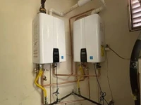

Water Heater Replacement & Tankless Upgrades in South Nampa, ID
South Nampa is a different kind of market than Downtown or Central Nampa. The neighborhoods here—Lake Vista Estates, Osprey Estates, Cherry Grove, Sweetwater Glen, and the newer developments along the 11th Avenue South corridor—were built primarily between 1994 and 2010, with some luxury construction continuing through the present. Water heaters in these homes are approaching or have already passed their expected lifespan, and many homeowners are making a deliberate choice about what to replace them with.
The most common call we receive from South Nampa isn't an emergency—it's a homeowner who knows their 15-year-old tank is on its last legs and wants to understand their options before it fails. That's the right approach, and we're equipped to have that conversation honestly.

Why South Nampa Homeowners Choose Tankless
The 1994–2004 Housing Stock Is Hitting Replacement Age
A home built in 1998 in Sweetwater Glen or Cherry Grove likely had its original water heater replaced once—around 2010–2012. That replacement unit is now 12–14 years old and operating in Nampa's hard water. This is exactly the window where a proactive replacement, rather than a reactive emergency, makes the most financial sense.
Homeowners in this situation have a real choice: replace like-for-like with a new tank (the fastest, least expensive option), or use this opportunity to upgrade to a tankless or heat pump system that will serve the home for 20+ years. We help South Nampa homeowners think through that decision with real numbers—not a sales pitch.
Tankless Water Heaters in South Nampa Homes
The homes in South Nampa's established subdivisions are generally well-suited for tankless conversion. They typically have adequate gas line capacity (or can be upgraded), proper venting options, and the garage or utility room space that tankless installation requires. The larger floor plans in neighborhoods like Osprey Estates and Lake Vista Estates also mean higher hot water demand—exactly the use case where tankless unlimited supply is most valuable.
One consideration specific to South Nampa: the proximity to Lake Lowell means some properties draw from irrigation water or have water quality that differs slightly from the municipal supply. We assess water quality as part of any tankless installation consultation—scale buildup in a tankless heat exchanger is the primary maintenance issue in this area, and we recommend appropriate mitigation upfront.
Heat Pump Water Heaters for South Nampa's Larger Homes
South Nampa's larger homes—many with 3-car garages and dedicated utility rooms—are ideal candidates for heat pump water heaters. These units require a minimum of 700–1,000 cubic feet of air space to operate efficiently, which rules them out for tight closet installations but makes them perfect for the spacious utility rooms common in this area's newer construction.
With federal tax credits currently covering up to 30% of installed cost (up to $600), and operating costs 2–3x lower than standard electric resistance units, the payback period for a heat pump water heater in a South Nampa home is typically 3–5 years.
Services Available in South Nampa (ZIP 83686)
- Water heater replacement — proactive and emergency, same-day available
- Tankless water heater installation — Navien, Rinnai, Noritz
- Heat pump (hybrid) water heater installation — federal tax credit eligible
- Water heater repair — gas and electric, all major brands
- Tankless descaling and maintenance — essential in Nampa's hard water
- Water quality assessment — for properties near Lake Lowell
South Nampa Neighborhoods We Serve
Our South Nampa service area includes Lake Vista Estates, Osprey Estates, Cherry Grove, Sweetwater Glen, Blackhawk Community, Diamond Peak, Reflections Edge, Royal Oaks, Brookdale Estates, and the newer developments along the 11th Avenue South corridor toward Lake Lowell. We also serve the Karcher neighborhood and adjacent areas in the 83686 zip code.
Other Areas We Serve Near South Nampa
We also provide water heater service throughout Downtown Nampa and Central Nampa. For a full list of neighborhoods served, see our service area overview.

South Nampa Water Heater FAQs
Yes. South Nampa's newer construction near Lake Lowell typically has the gas line capacity, venting clearance, and garage or utility room space that tankless installation requires — making it the area of Nampa where we install the most tankless upgrades.
South Nampa is in ZIP code 83686.
Yes, eventually. Even a water heater installed in a newer South Nampa home reaches the end of its service life on the same general timeline as any other unit — newer construction affects installation options, not how long the original equipment lasts.
Yes. We handle new-construction installations throughout South Nampa, including tankless systems sized for larger floor plans and heat pump water heaters where the mechanical space allows.